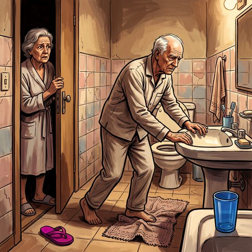

Ferramenta desta aula
Quedas — estratificação de risco. Roda no navegador, sem cadastro.
Consulta rápida à beira do leito
Condutas, doses e interações.
Referências da aula · 7
- Montero-Odasso M, van der Velde N, Martin FC, et al. World guidelines for falls prevention and management for older adults: a global initiative. Age Ageing. 2022;51(9):afac205. PMID 36178003. doi:10.1093/ageing/afac205.PubMedDOI
- Podsiadlo D, Richardson S. The timed “Up & Go”: a test of basic functional mobility for frail elderly persons. J Am Geriatr Soc. 1991;39(2):142-8. PMID 1991946.PubMed
- Kortebein P, Ferrando A, Lombeida J, Wolfe R, Evans WJ. Effect of 10 days of bed rest on skeletal muscle in healthy older adults. JAMA. 2007;297(16):1772-4. PMID 17456818.PubMed
- Resnick NM, Yalla SV. Management of urinary incontinence in the elderly. N Engl J Med. 1985;313(13):800-5. PMID 2863753.PubMed
- 2023 American Geriatrics Society Beers Criteria® Update Expert Panel. American Geriatrics Society 2023 updated AGS Beers Criteria® for potentially inappropriate medication use in older adults. J Am Geriatr Soc. 2023;71(7):2052-81. PMID 37139824. doi:10.1111/jgs.18372.PubMedDOI
- Freitas EV, Py L, organizadores. Tratado de Geriatria e Gerontologia. 5ª ed. Rio de Janeiro: Guanabara Koogan; 2022.
- Linhares Junior JD. Casos clínicos ilustrativos construídos para as aulas, a partir da prática clínica geriátrica. In: Pós-graduação em Geriatria 2.0. Afya; 2026.
Documentos oficiais
Leis e publicações do Ministério da Saúde sobre o cuidado da pessoa idosa, de acesso livre.
Abrir os documentos